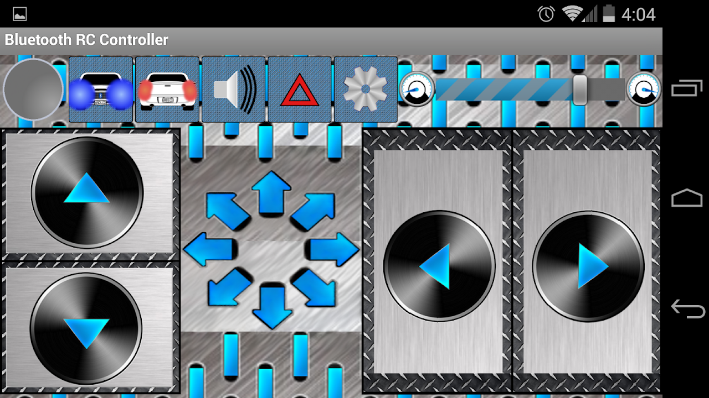

Montagem do carrinho
1. Encaixe os motores e em seguida as rodas no chassi;

2. Encaixe o conector para as pilhas;

3. Posicione os componentes eletrônicos, passando a fiação por dentros dos furos do chassi;

4. Aperte os parafusos;

5. Finalmente, encaixe a carroceria de sua escolha.

Programação
1. Abra a
Arduino IDE e grave o código do programa na protoboard;

2. Instale e configure o aplicativo
Bluetooth RC Car - V 2.1 no seu celular.

Principais trechos do código
void loop() {
while (Serial.available()) {
comando = Serial.read();
if (comando == 'F') {
frente();
}
else if (comando == 'B') {
tras();
}
else if (comando == 'L') {
esquerda();
}
else if (comando == 'R') {
direita();
}
else {
parado();
}
}
}
Serial.available(): Verifica se há dados disponíveis para leitura.
Serial.read(): Lê o dado recebido (um caractere).
O caractere determina qual função será chamada:
'F': Move para frente.
'B': Move para trás.
'L': Vira à esquerda.
'R': Vira à direita.
Qualquer outro comando: Para o robô.
void tras() {
analogWrite(PWML, 180);
analogWrite(PWMR, 180);
digitalWrite(IN1, LOW);
digitalWrite(IN2, HIGH);
digitalWrite(IN3, LOW);
digitalWrite(IN4, HIGH);
}
Define velocidade PWM como 180 (cerca de 70% da potência máxima).
Configura os pinos para girar ambos os motores no sentido horário (movimento para trás).